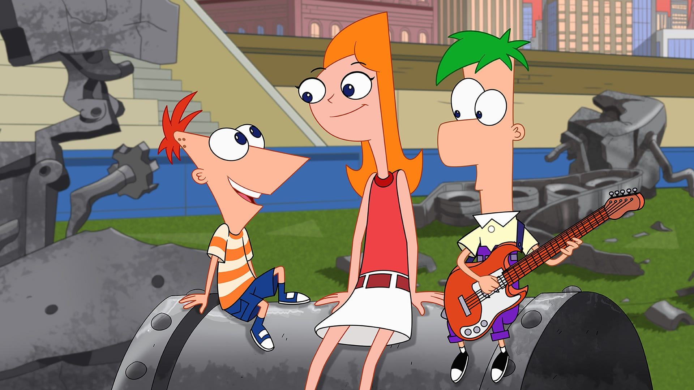

About Phineas
Phineas comes from a blended family, a decision creator Marsh made to reflect his own experiences growing up.His step-brother, Ferb, is his best friend. Phineas's birth father is never present or discussed in the series, something Marsh and Povenmire have stated that they fully intend to keep that way. It is established that his mother, Linda Flynn-Fletcher married Ferb's father, Lawrence Fletcher, after dating him for a while in the 1990s. They truly fell in love at a concert of the fictitious band "Love Händel" after they were put on the kiss cam. Phineas is portrayed as an intelligent, creative, innovative, and good-natured child. As a means to defeat boredom, he and Ferb devise outrageous activities throughout their summer vacation, often participating in activities – toy design (in "Toy to the World"); piracy (in "The Ballad of Badbeard"); engineering (in "It's About Time!"); restaurant management (in "Chez Platypus"); usually inaccessible to children. Phineas lives in the fictional town of Danville (part of the Tri-State Area), in a large, suburban neighborhood; he comes up with most of his ideas while sitting with Ferb in his backyard.
Phineas and his siblings
Phineas's Characteristics
- Phineas is a selfless, optimistic, intelligent, friendly and creative child.
- He and his brother devise outrageous activities piracy, engineering, restaurant management, and other things usually inaccessible to children.
- Phineas often uses his ability to boost the morale of those around him during phases of depression.
Phineas's Friends
Phineas's best friend is actually his brother Ferb Fletcher. He also has a pet called Perry the Platypus. Click on the links below to read more about them: